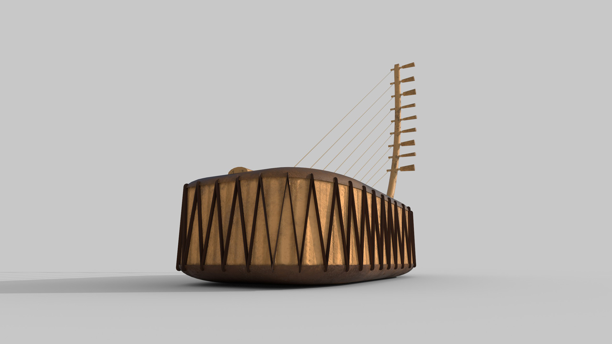
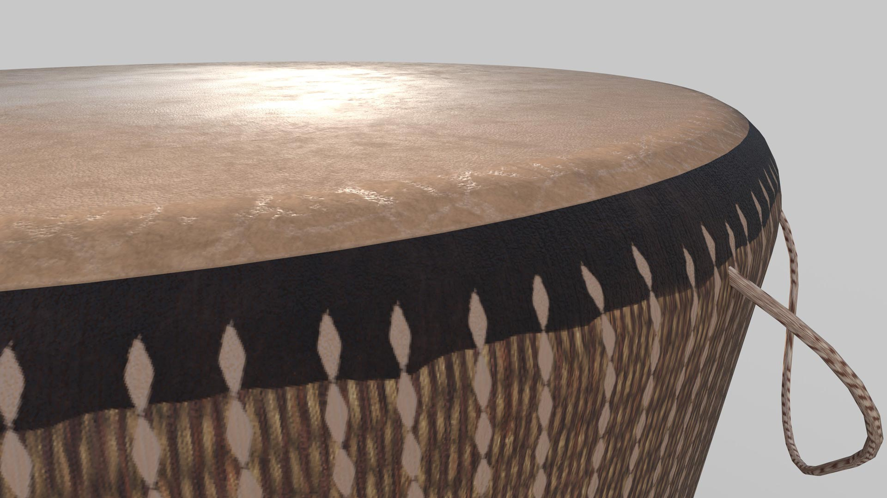

Adungu & Engoma
3D modelling and texturing
2024
3D assets for J.C Muyonjo's AR app about
Ugandan Indigenous Musical Instruments
The challenge of representing the Adungu and Engoma as virtual 3D objects was preserving the details of their
handcrafted shapes while maintaining computational performance. I modelled both instruments in Blender
according to real photo references, keeping the total polycount around 20 thousand triangles per model.
Because both instruments are usually played outdoors, I added dirt stains and scratches to the wood and
leather materials when texturing in Substance Painter.
Software
Blender
Substance Painter
Unity

Adungu
This multi-stringed bow harp is commonly referred to as the Adungu among the Alur people of north-western Uganda. The Adungu is made from a hollowed-out wooden slab and two stretched pieces of leather woven together at the centre. The top leather piece acts as a soundboard, while the wooden frame functions as a support structure to secure the strings to the soundboard.


Engoma
The drum, commonly referred to as Engoma in eastern, western, and central Uganda, is the most common musical instrument in the country. It is made from materials indigenous to the region, i.e., leather rope strappings, a stretched-out top covering fashioned from animal hide, and a wooden hollow frame.
